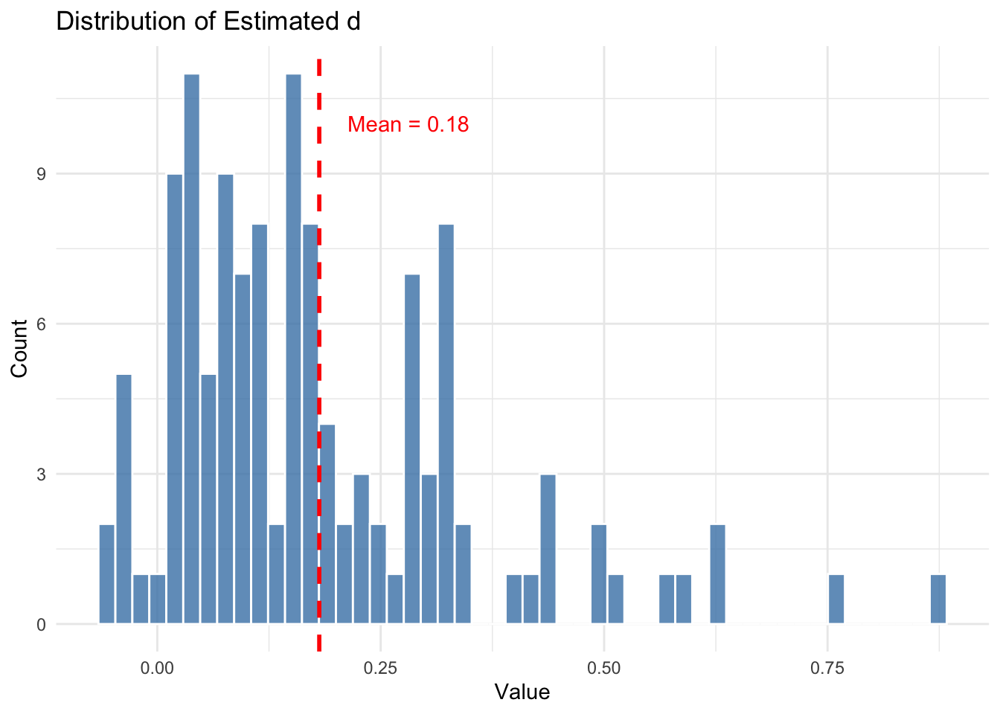
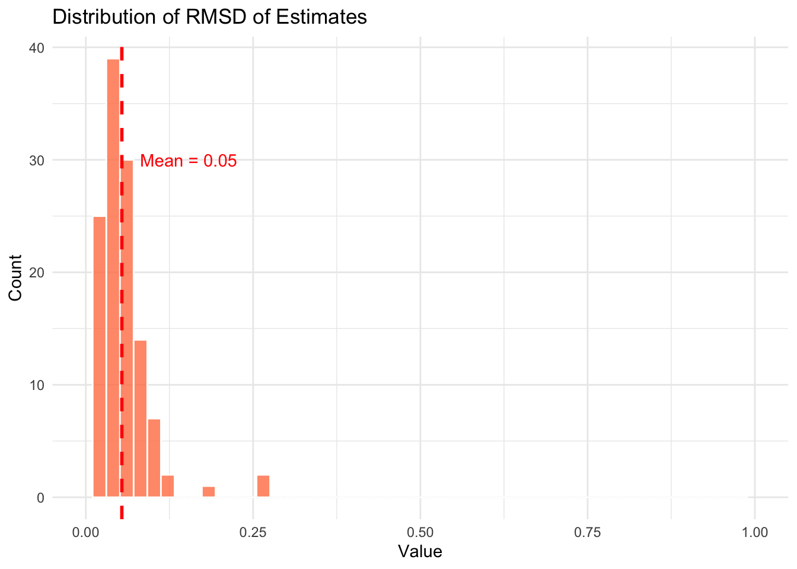
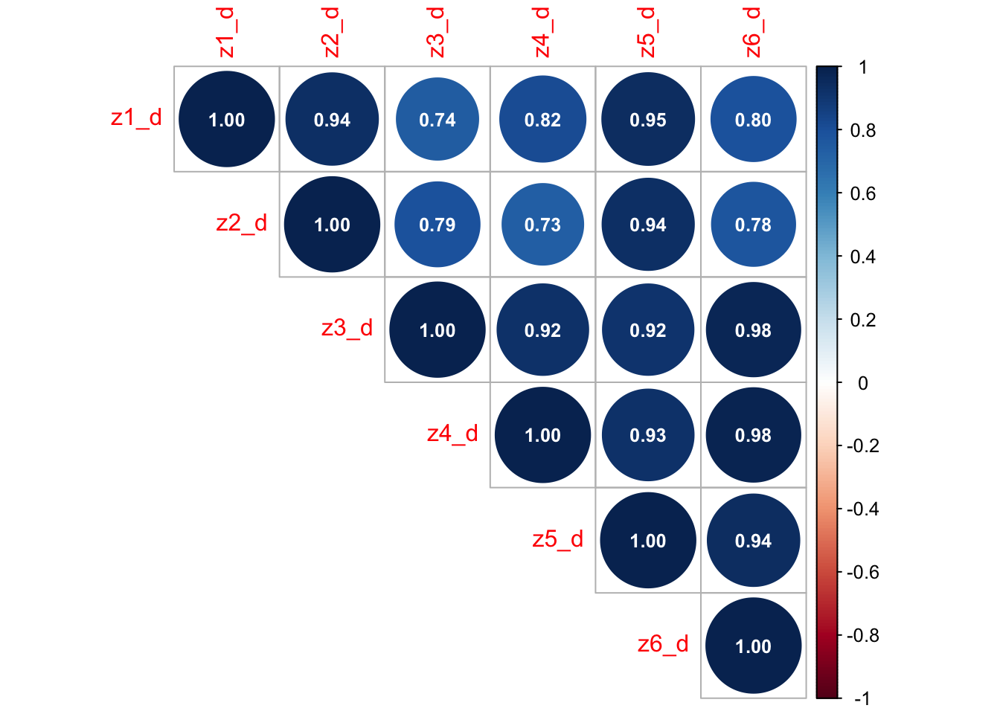
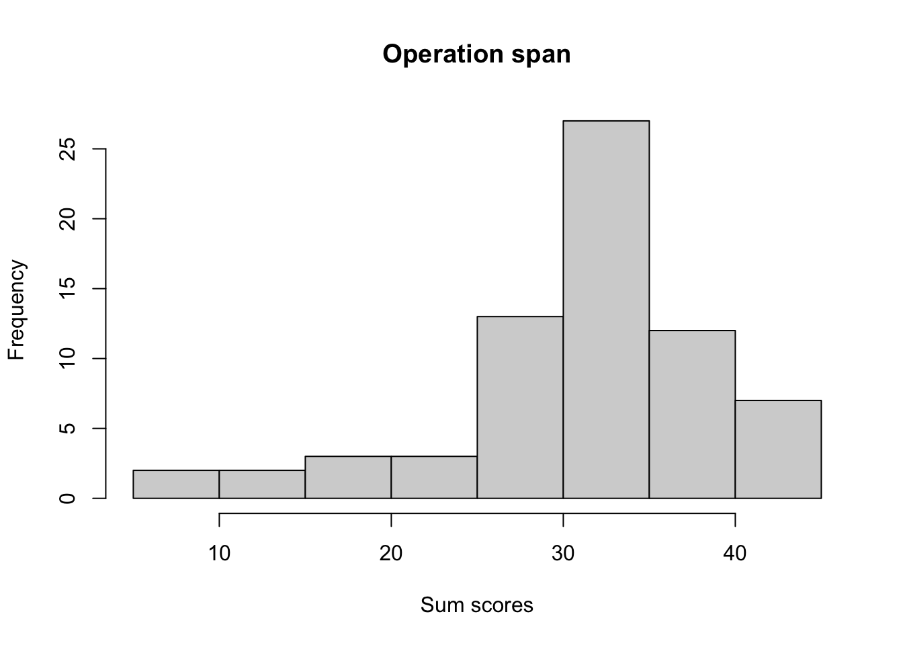
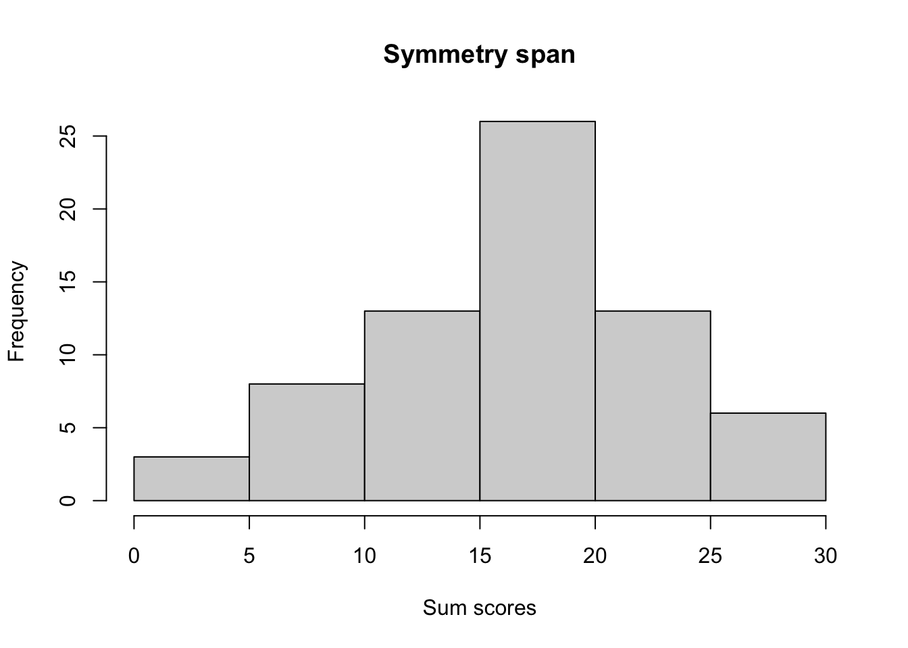
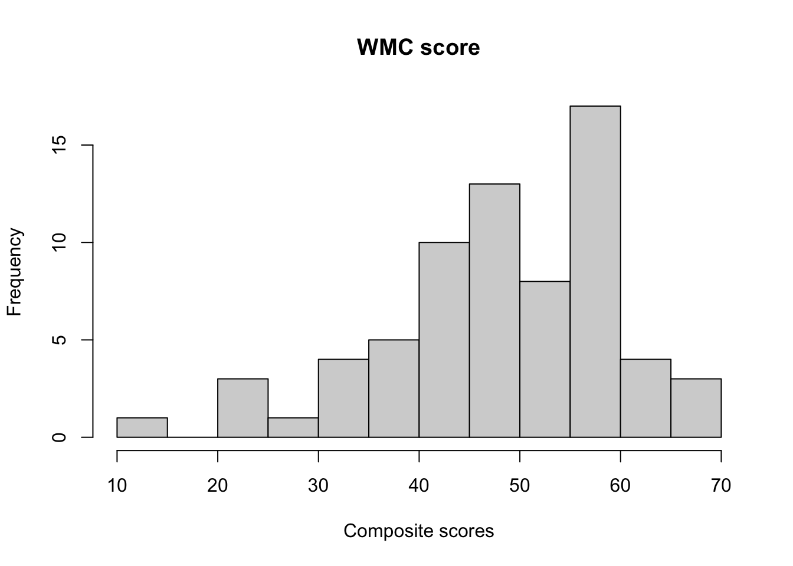
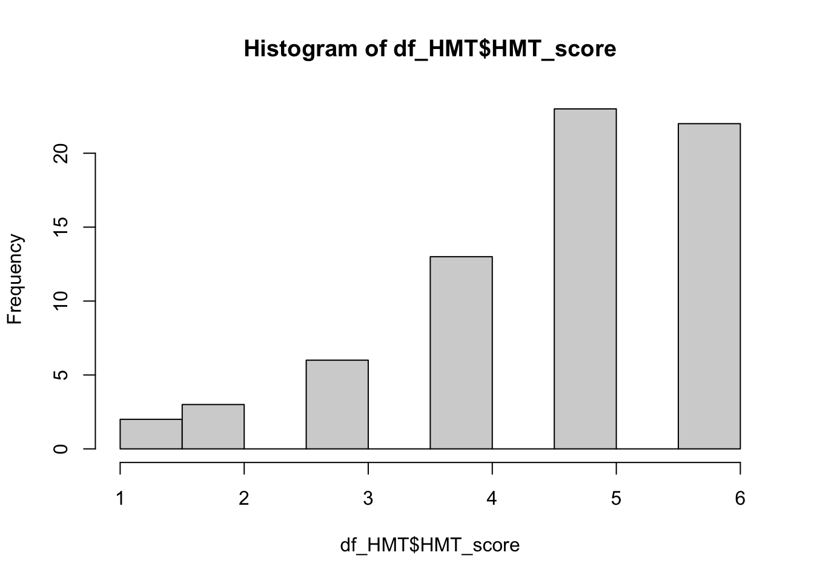

if (!requireNamespace("pacman", quietly = TRUE)) {
install.packages("pacman")
}
library("pacman")
p_load(tidyverse, psych, corrplot, lme4)
options(digits = 4)
exclusion_noise <-read.csv(here::here("data_and_analysis", "data",
"part2_estimation_task",
"exclusion_part2_IDs.csv"
))
#if the data cannot be read, try df_noise <- read.csv(here::here("data",
# "part2_estimation_task",
# "noise_conj_disj.csv"))
df_noise <- read.csv(here::here("data_and_analysis", "data",
"part2_estimation_task",
"noise_conj_disj.csv")) |>
filter(! id %in% exclusion_noise$id)
exclusion_ranking <- read.csv(here::here("data_and_analysis",
"data", "part3_ranking_task",
"exclusion_part3_IDs.csv"))
df_ranking <- read.csv(here::here("data_and_analysis", "data",
"part3_ranking_task",
"result_ranking.csv")) |>
filter(id %in% df_noise$id) |>
filter(! id %in% exclusion_ranking$id)
exclusion_WMGf <- read.csv(here::here("data_and_analysis", "data",
"part4_WMC_Gf",
"exclusion_part4_IDs.csv"))
df_OSPAN <- read.csv(here::here("data_and_analysis", "data",
"part4_WMC_Gf",
"df_part4_OSPAN.csv")) |>
filter(id %in% df_ranking$id) |>
filter(! id %in% exclusion_WMGf$id)
df_SSPAN <- read.csv(here::here("data_and_analysis", "data",
"part4_WMC_Gf",
"df_part4_SSPAN.csv")) |>
filter(id %in% df_ranking$id) |>
filter(! id %in% exclusion_WMGf$id)
WMC_result <- df_OSPAN |>
full_join(df_SSPAN, by = c("id", "splength"))
WMC_result <- WMC_result |>
group_by(id) |>
fill(OSPAN_processing, SSPAN_processing, .direction = "updown") |>
mutate(OSPAN_pass = ifelse(OSPAN_processing >= 0.85, 1, 0),
SSPAN_pass = ifelse(SSPAN_processing >= 0.85, 1, 0)) |>
filter(OSPAN_pass == 1 & SSPAN_pass == 1 ) |>
group_by(id) |>
mutate(OSPAN_PC_count_sum = sum(OSPAN_partial_credit, na.rm = TRUE),
SSPAN_PC_count_sum = sum(SSPAN_partial_credit, na.rm = TRUE)) |>
select(id, OSPAN_PC_count_sum, SSPAN_PC_count_sum) |>
unique() |>
mutate(composite_score = OSPAN_PC_count_sum + SSPAN_PC_count_sum)
df_OSPAN <- df_OSPAN |>
filter(id %in% WMC_result$id)
df_SSPAN <- df_SSPAN |>
filter(id %in% WMC_result$id)
df_HMT <- read.csv(here::here("data_and_analysis", "data",
"part4_WMC_Gf",
"df_HMT.csv")) |>
select(id, HMT_score = no_correct) |>
filter(id %in% WMC_result$id) measures
R preparation
The Estimated Noise Parameter :
Using participants’ probability estimates from Part 2, we applied, for each participant and each weather-condition pair, six probabilistic expressions (z1 to z6) to calculate estimates of d. For each expression, we averaged estimates across weather-condition pairs to obtain one expression-specific estimate (z1_d, z2_d, … z6_d). We then averaged six expression-specific estimates to form a composite estimate of each participant’s noise parameter (d_average).
Descriptive statistics:
df_noise_RQ1 <- df_noise |>
filter(id %in% df_ranking$id) #125 participants
#prediction(the estimated noise parameter)
mean(df_noise_RQ1$d_average) #0.18[1] 0.1813sd(df_noise_RQ1$d_average) #0.17[1] 0.171range(df_noise_RQ1$d_average) #-0.06 0.87[1] -0.05635 0.87385quantile(df_noise_RQ1$d_average, 0.25) #0.05 25%
0.05354 quantile(df_noise_RQ1$d_average, 0.75) #0.28 75%
0.2823 #participants whose estimated values lie outside of the theoretical range
df_noise_RQ1_outsiderange <- df_noise_RQ1 |>
filter(d_average > 0.5 | d_average < 0)
df_noise_RQ1_outsiderange$id |> unique() |> length() #15/125 = 12%[1] 15RMSD of the prediction:
We calculated the root-mean-square deviation (RMSD) across estimates (z1_d, z2_d, z3_d …, z6_d) from different probabilistic expressions (sd_d) for each participant.
mean(df_noise_RQ1$sd_d) #0.05[1] 0.0538sd(df_noise_RQ1$sd_d) #0.04[1] 0.03829range(df_noise_RQ1$sd_d) #0.00 0.27[1] 0.003961 0.264833quantile(df_noise_RQ1$sd_d, 0.25) #0.03 25%
0.03264 quantile(df_noise_RQ1$sd_d, 0.75) #0.06 75%
0.06437 mean(df_noise_RQ1$sd_d) / 0.5 #11%[1] 0.1076mean(df_noise_RQ1$sd_d) / (max(df_noise_RQ1$d_average) - min(df_noise_RQ1$d_average)) #6%[1] 0.05783( hist_d_average <- ggplot(df_noise_RQ1, aes(x = d_average)) +
geom_histogram(bins = 50, fill = "steelblue", color = "white", alpha = 0.8) +
geom_vline(aes(xintercept = mean(d_average)),
color = "red", linetype = "dashed", linewidth = 1) +
annotate("text", x = mean(df_noise_RQ1$d_average) + 0.1,, y = 10,
label = paste("Mean =", round(mean(df_noise_RQ1$d_average), 2)),
color = "red") +
labs(title = "Distribution of Estimated d",
x = "Value",
y = "Count") +
theme_minimal() )
( hist_sd_d <- ggplot(df_noise_RQ1, aes(x = sd_d)) +
geom_histogram(bins = 50, fill = "coral", color = "white", alpha = 0.8) +
geom_vline(aes(xintercept = mean(sd_d)),
color = "red", linetype = "dashed", linewidth = 1) +
annotate("text", x = mean(df_noise_RQ1$sd_d) + 0.1, y = 30,
label = paste("Mean =", round(mean(df_noise_RQ1$sd_d), 2)),
color = "red") +
labs(title = "Distribution of RMSD of Estimates",
x = "Value",
y = "Count") +
xlim(0, 1) +
theme_minimal() )Warning: Removed 2 rows containing missing values or values outside the scale range
(`geom_bar()`).
Pairwise Pearson correlations among the six expression-specific estimates:
cor_matrix <- cor(df_noise_RQ1 |>
select(z1_d,z2_d,
z3_d, z4_d,
z5_d, z6_d))
plot <- corrplot(
cor_matrix,
type = "upper",
addCoef.col = "white",
number.cex = 0.8
)
upper_tri_cors <- cor_matrix[upper.tri(cor_matrix)]
mean(upper_tri_cors) #0.88[1] 0.8766range(upper_tri_cors) #0.73 0.98[1] 0.7314 0.9817We also looked at the above statistics in the subsample for Research Question 2, by running the above code with df_noise_RQ2 instead of df_noise_RQ1. the data frame df_noise_RQ2 can be found in the following:
df_noise_RQ2 <- df_noise |>
filter(id %in% df_HMT$id) Illogical rankings :
Descriptive statistics
number of illogical rankings by event-set condition:
df_ranking |>
group_by(id, condition) |>
mutate(sum_illogical = sum(logical_pass)) |>
select(id, condition, sum_illogical) |>
unique() |>
group_by(condition) |>
summarise(mean = mean(sum_illogical),
sd = sd(sum_illogical))# A tibble: 2 × 3
condition mean sd
<chr> <dbl> <dbl>
1 edge 2.87 2.05
2 middle 6.19 2.97number of illogical rankings aggregated across event-set condition
df_ranking |>
group_by(id) |>
mutate(sum_illogical = sum(logical_pass)) |> #the number of trials where the responses were illogical
select(id, sum_illogical) |>
unique() |>
ungroup() |>
summarise(mean = mean(sum_illogical),
sd = sd(sum_illogical))# A tibble: 1 × 2
mean sd
<dbl> <dbl>
1 9.06 4.30Analysis: more errors in the mid-event set condition?
m1 <- glmer(logical_pass ~ condition +
(1 + condition |id),
data = df_ranking,
family = binomial(link = "logit"))
summary(m1)Generalized linear mixed model fit by maximum likelihood (Laplace
Approximation) [glmerMod]
Family: binomial ( logit )
Formula: logical_pass ~ condition + (1 + condition | id)
Data: df_ranking
AIC BIC logLik -2*log(L) df.resid
3545 3575 -1767 3535 2995
Scaled residuals:
Min 1Q Median 3Q Max
-2.068 -0.622 -0.423 0.765 3.053
Random effects:
Groups Name Variance Std.Dev. Corr
id (Intercept) 0.579 0.761
conditionmiddle 0.346 0.589 0.09
Number of obs: 3000, groups: id, 125
Fixed effects:
Estimate Std. Error z value Pr(>|z|)
(Intercept) -1.2978 0.0979 -13.3 <2e-16 ***
conditionmiddle 1.3537 0.1046 12.9 <2e-16 ***
---
Signif. codes: 0 '***' 0.001 '**' 0.01 '*' 0.05 '.' 0.1 ' ' 1
Correlation of Fixed Effects:
(Intr)
conditnmddl -0.448coefs <- fixef(m1)
ses <- coef(summary(m1))[, "Std. Error"]
zval <- 1.96 # for 95% CI
lower <- coefs - zval * ses
upper <- coefs + zval * ses
(or_table <- round(cbind(OR = exp(coefs), Lower = exp(lower), Upper = exp(upper)), 2)) OR Lower Upper
(Intercept) 0.27 0.23 0.33
conditionmiddle 3.87 3.15 4.75WMC:
Descriptive statistics：
Operation span score:
hist(WMC_result$OSPAN_PC_count_sum, xlab = "Sum scores", main = "Operation span")
mean(WMC_result$OSPAN_PC_count_sum) #31.59[1] 31.59sd(WMC_result$OSPAN_PC_count_sum) #7.61[1] 7.614range(WMC_result$OSPAN_PC_count_sum) #8 42 [1] 8 42Symmetry span score:
hist(WMC_result$SSPAN_PC_count_sum, xlab = "Sum scores", main = "Symmetry span")
mean(WMC_result$SSPAN_PC_count_sum)[1] 16.74sd(WMC_result$SSPAN_PC_count_sum)[1] 6.092range(WMC_result$SSPAN_PC_count_sum)[1] 4 27Composite score:
hist(WMC_result$composite_score, xlab = "Composite scores", main = "WMC score")
mean(WMC_result$composite_score)[1] 48.33sd(WMC_result$composite_score)[1] 11.37range(WMC_result$composite_score)[1] 13 69Cronbach’s alpha:
operation span:
df_OSPAN2 <- df_OSPAN |>
pivot_wider(names_from = splength, values_from = OSPAN_partial_credit) |>
select(id, `3`, `4`, `5`, `6`, `7`, `8`, `9`) |>
group_by(id) |>
fill( `3`: `9`, .direction = "updown") |>
unique()
alpha_ospan <- psych::alpha(df_OSPAN2[, 2:8])
alpha_ospan$total raw_alpha std.alpha G6(smc) average_r S/N ase mean sd median_r
0.7197 0.8261 0.8284 0.4042 4.75 0.048 4.513 1.088 0.3674symmetry span:
df_SSPAN2 <- df_SSPAN |>
pivot_wider(names_from = splength, values_from = SSPAN_partial_credit) |>
select(id, `2`, `3`, `4`, `5`, `6`, `7`) |>
group_by(id) |>
fill(`2`:`7`, .direction = "updown") |>
unique()
alpha_sspan <- psych::alpha(df_SSPAN2[, 2:7])
alpha_sspan$total raw_alpha std.alpha G6(smc) average_r S/N ase mean sd median_r
0.6892 0.6951 0.6968 0.2753 2.28 0.04777 2.79 1.015 0.2875Gf
Descriptive statistics：
df_HMT |>
summarise(mean = mean(HMT_score),
sd = sd(HMT_score),
range = range(HMT_score))Warning: Returning more (or less) than 1 row per `summarise()` group was deprecated in
dplyr 1.1.0.
ℹ Please use `reframe()` instead.
ℹ When switching from `summarise()` to `reframe()`, remember that `reframe()`
always returns an ungrouped data frame and adjust accordingly. mean sd range
1 4.71 1.285 1
2 4.71 1.285 6hist(df_HMT$HMT_score)
Correlation with the WMC score：
df_HMT_WMC <- df_HMT |>
left_join(WMC_result, by = "id")
cor.test(df_HMT_WMC$HMT_score, df_HMT_WMC$composite_score)
Pearson's product-moment correlation
data: df_HMT_WMC$HMT_score and df_HMT_WMC$composite_score
t = 3.6, df = 67, p-value = 5e-04
alternative hypothesis: true correlation is not equal to 0
95 percent confidence interval:
0.1879 0.5868
sample estimates:
cor
0.4065